1. 자바 설치 확인
java -version
javac -version- java : 이미 컴파일된
.class파일을 실행할 때 사용 - javac :
.java파일을.class파일로 바꿀 때 사용
2. 수동설치
| 이미지 | 설명 |
|---|---|
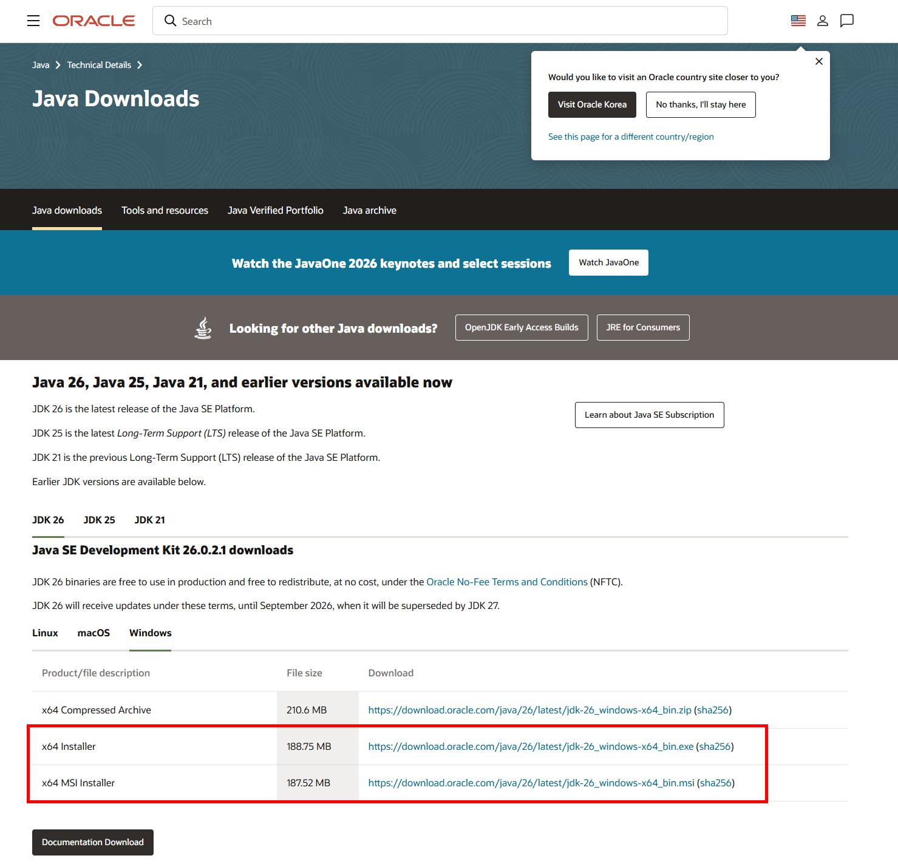 |
JDK 다운로드 |
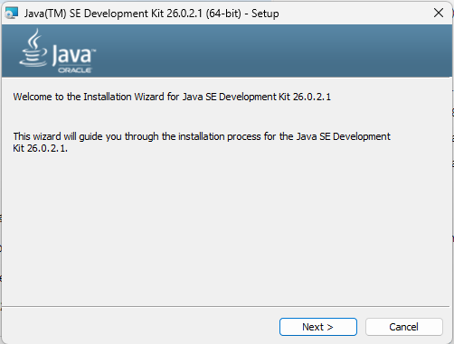 |
설치 |
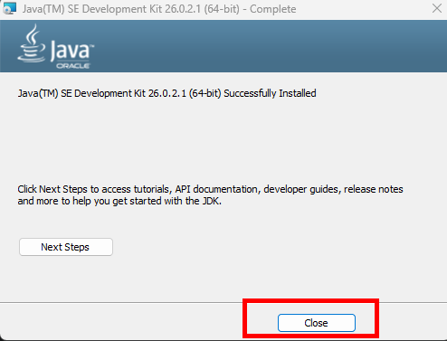 |
설치완료 |
| 실행 결과 | 설명 |
|---|---|
|
[설치 확인]
|
3. 환경변수 설정
3.1 Windows 검색에서 환경 변수 검색 → 시스템 환경 변수 편집 → 환경 변수 클릭.
| 이미지 | 설명 |
|---|---|
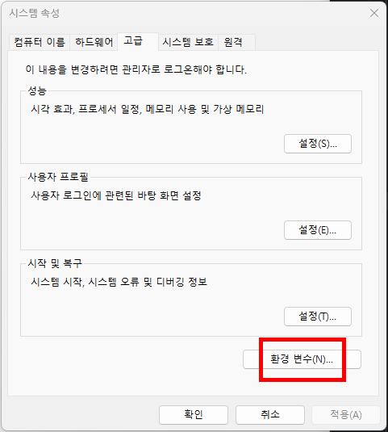 |
환경변수 클릭 |
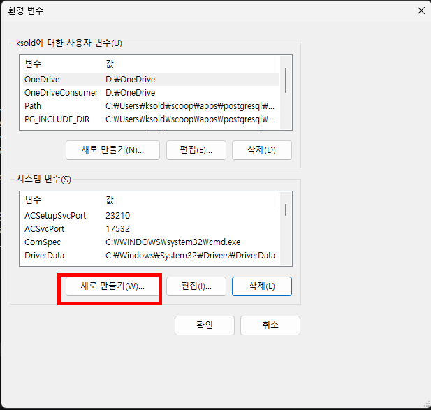 |
새로만들기 |
3.2 환경변수 JAVA_HOME 생성 및 Path 등록
| 이미지 | 설명 |
|---|---|
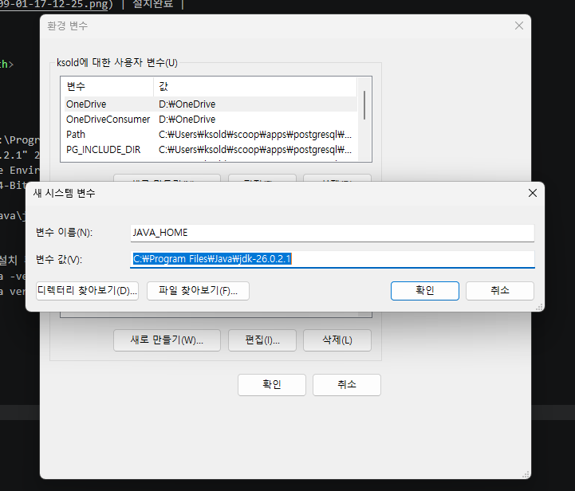 |
JAVA_HOME 생성 |
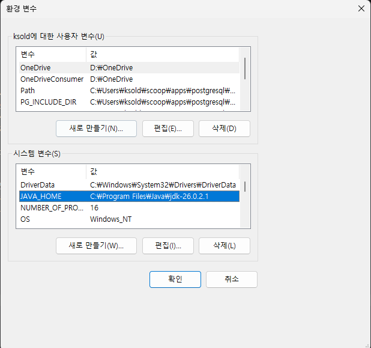 |
JAVA_HOME 변수 확인 |
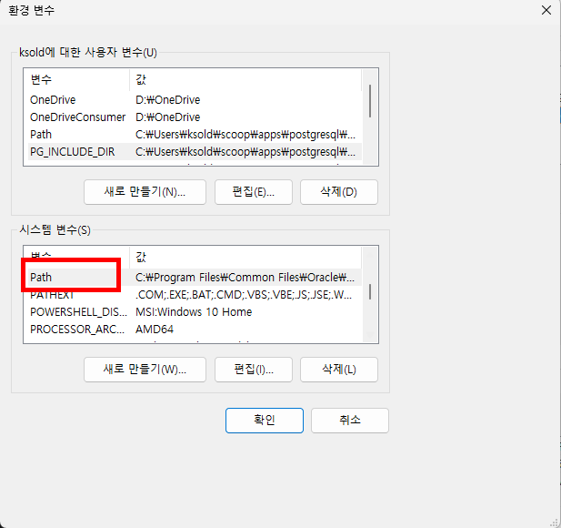 |
Path 변수 편집 |
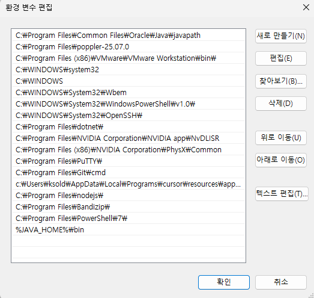 |
%JAVA_HOME%\bin 등록 |
4. Q&A
4.1 vscode 모두 닫고 재실행
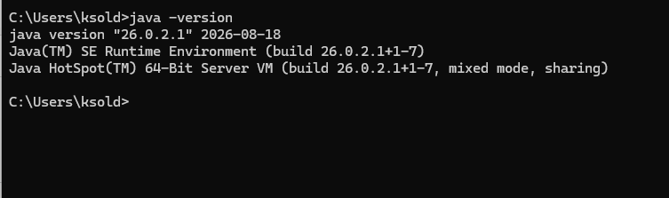
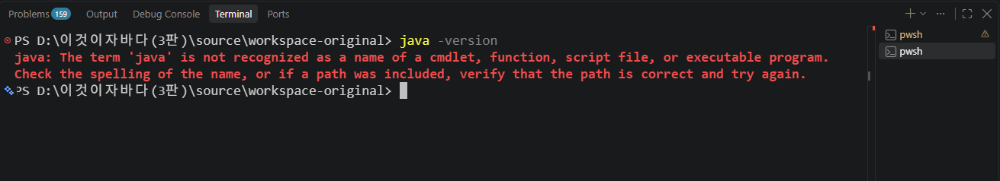
외부 cmd 에서는 확인 but vs code 에서는 안됨 vs code 를 모두 닫은 후 다시 재실행